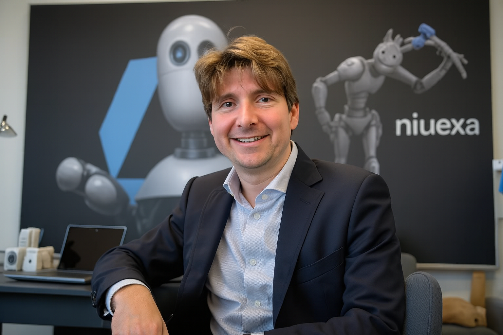

Gregor Maric
Gregor Maric è CEO e co-fondatore di Niuexa, società italiana di consulenza in intelligenza artificiale con sedi a Milano e Torino. Si occupa di AI generativa, automazione dei processi aziendali e sviluppo di agenti AI per imprese e PMI.

Chi è Gregor Maric
CEO e Co-Fondatore di Niuexa
Gregor Maric è un imprenditore italiano attivo nel settore dell'automazione e dell'intelligenza artificiale. Ha co-fondato Niuexa con Roberto Botto per rendere l'AI generativa applicabile ai processi reali delle aziende, non solo alle sperimentazioni.
Il suo lavoro si concentra su tre aree: la valutazione dei processi aziendali che possono essere automatizzati con un ritorno misurabile, la progettazione di agenti AI integrati con i sistemi già in uso (CRM, ERP, gestionali documentali) e la formazione dei team interni che dovranno usarli ogni giorno.
La sua posizione sull'adozione dell'AI è dichiaratamente pragmatica: l'intelligenza artificiale non sostituisce le persone, ne amplia la capacità operativa. Per questo i progetti Niuexa partono sempre da un caso d'uso circoscritto e misurabile, con controlli human-in-the-loop sui passaggi critici.
Aree di competenza
Intelligenza artificiale generativa
Applicazione di large language model ai processi aziendali: generazione documentale, sintesi, classificazione ed estrazione dati da fonti non strutturate.
Agenti AI e automazione
Progettazione di agenti che eseguono flussi operativi end-to-end, integrati via API e webhook con CRM, ERP e gestionali già in uso in azienda.
Answer Engine Optimization
Metodologie per rendere un'azienda citabile da ChatGPT, Perplexity, Claude e Google AI Overview attraverso dati strutturati e segnali di autorità.
Formazione e adozione
Programmi di formazione per team aziendali, con l'obiettivo di rendere autonome le persone che useranno gli strumenti AI dopo la consegna del progetto.
Pubblicazioni
Gregor Maric è autore della AI Operator Series, una collana di ebook operativi dedicati all'implementazione pratica di sistemi e agenti AI.
The MCP Blueprint
Il Model Context Protocol applicato alle integrazioni AI enterprise.
Risorse del libroThe One-Person Empire
Costruire e scalare un'attività AI gestita da una sola persona.
Risorse del libroThe No-Code AI Bible
32 automazioni pronte all'uso realizzabili senza scrivere codice.
Risorse del libroParla con il team di Niuexa
L'assessment iniziale per identificare i processi automatizzabili nella tua azienda è gratuito.